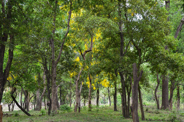
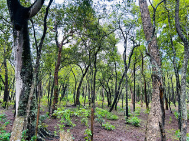

Neem is widely distributed across tropical and subtropical regions, particularly in:
India: The main regions for sandalwood cultivation are Karnataka, Tamil Nadu, Andhra Pradesh,
and Kerala.
Other Regions: Sandalwood is also found in Southeast Asia, such as Indonesia, and has been
introduced to Australia, where it is cultivated commercially.
Sandalwood grows best in well-drained soils, including red loam, clay, and sandy soils. It prefers dry
climates and can be found in semi-arid and arid regions. Sandalwood trees can grow in rocky and gravelly
soils as well.


Medicinal Uses
Sandalwood has been used for centuries in traditional medicine, particularly in Ayurveda and Unani
systems:
Skin Care: Sandalwood paste and oil are commonly used to treat skin conditions like acne,
rashes, and eczema. It has cooling and anti-inflammatory properties that help soothe the skin and
reduce irritation
Aromatherapy and Mental Health: Sandalwood oil is widely used in aromatherapy for its calming
and relaxing effects. It helps reduce stress, anxiety, and depression. Sandalwood's aroma is known
to promote mental clarity and focus during meditation
Antiseptic and Antimicrobial: Sandalwood oil has antiseptic properties that make it effective
for treating wounds, cuts, and burns. It helps prevent infections and promotes faster healing.
Respiratory Health: Sandalwood is used to treat respiratory issues such as bronchitis,
coughs, and colds. It helps soothe the throat and clear congestion.
Digestive Health: In traditional medicine, sandalwood is used to treat digestive problems
such as gastritis, ulcers, and dysentery. It has mild astringent properties that help improve
digestion.
Anti-inflammatory and Antioxidant: Sandalwood has anti-inflammatory and antioxidant
properties that help reduce inflammation and protect the body from oxidative stress.
Methods of Cultivation
Climate and Soil Requirements: Sandalwood grows well in tropical and subtropical climates with temperatures ranging from 12°C to 35°C. It requires well-drained soil, such as red loam, clay, or sandy soil. Sandalwood can also tolerate rocky and gravelly soils. The tree prefers regions with moderate rainfall, ranging from 600 mm to 1600 mm annually, and grows well in dry climates with good sunlight.
Propagation: Sandalwood is propagated through seeds. The seeds are collected from mature trees, cleaned, and soaked in water for 24 hours before sowing. Germination can be slow, often taking 6 to 12 months. Vegetative propagation methods like grafting and tissue culture are also being explored to produce high-quality sandalwood.
Planting: Sandalwood is typically planted during the monsoon season. It is a semi-parasitic plant, meaning that it requires a host plant to grow. The host plants supply the sandalwood tree with nutrients, so it is important to plant compatible host plants such as legumes (e.g., red gram, cowpea, and pigeon pea) near the sandalwood saplings.
Watering: Sandalwood requires minimal watering once established. Young saplings need regular watering during the initial stages of growth, especially during dry periods. Care must be taken to avoid waterlogging, as sandalwood trees are sensitive to excess moisture.
Pruning: Pruning is essential to maintain the health and shape of the sandalwood tree. Dead or diseased branches should be removed regularly to allow better air circulation and sunlight penetration. Pruning also helps in controlling the height and encourages heartwood formation
Pest Control: Sandalwood is susceptible to pests like root grubs, borers, and leaf spot diseases. Regular monitoring and timely application of organic insecticides or neem oil can help control pests. Ensuring good soil health and proper drainage also reduces the risk of diseases.
Harvesting: Sandalwood trees take about 15 to 20 years to mature and develop the valuable heartwood, which is rich in essential oil. The tree is harvested by cutting it close to the ground, as the heartwood extends into the roots. The harvested wood is then processed to extract sandalwood oil, which is the most valuable product from the tree.